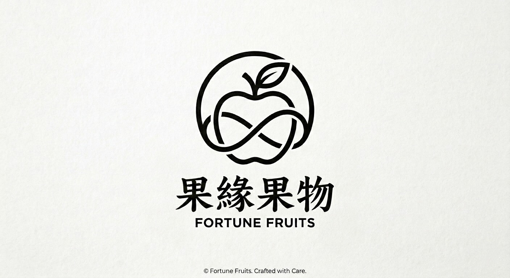
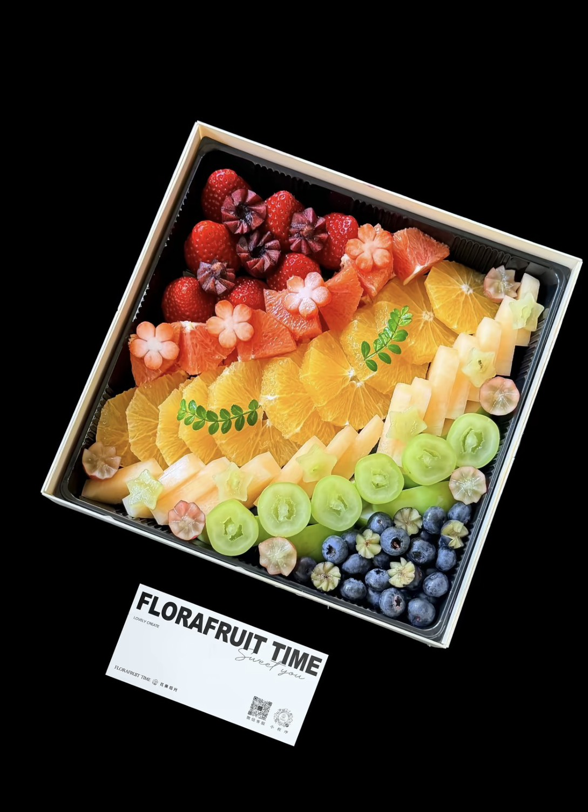
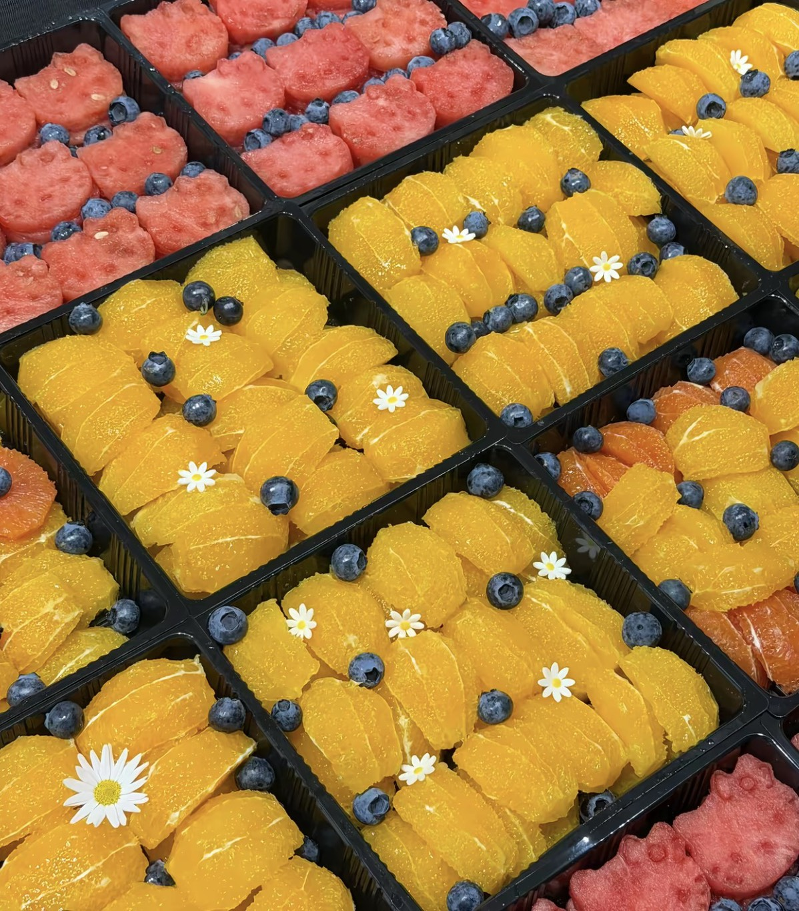
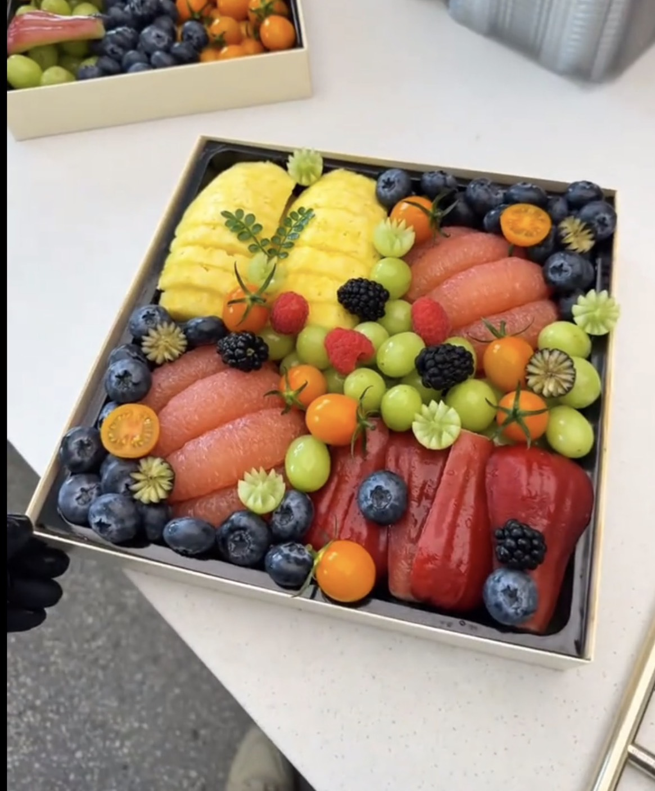
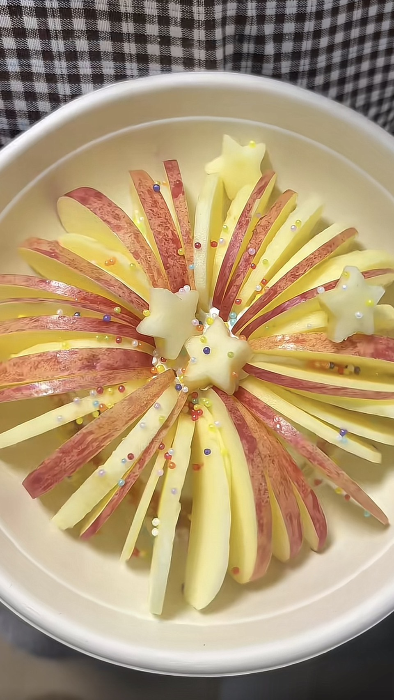

企業招待
用清爽細緻的水果禮盒，為客戶拜訪與貴賓接待留下舒服印象。

果緣 Fortune Fruits
Fresh Fruit, Crafted for Gatherings
精緻商務果切拼盤
以當季鮮果、細緻切工與溫柔擺盤，為會議招待、節慶贈禮與重要時刻準備剛剛好的豐盛。
預約客製洽詢果緣相信一份水果拼盤不只是點心，而是場合裡最自然的儀式感。從水果熟度、色彩層次到入口份量， 每一盒都依照活動氣氛與招待需求安排，讓商務往來多一點輕盈，也多一點被照顧的溫度。
不固定菜單與價格，依照季節、份量、場合與預算討論專屬搭配。



用清爽細緻的水果禮盒，為客戶拜訪與貴賓接待留下舒服印象。
適合長時間會議、講座與內部活動，份量與食用便利性可依人數調整。
以鮮明果色與豐盛層次，成為派對桌上自然又吸睛的焦點。
以當季水果搭配禮盒設計，傳遞清新、不厚重的節日心意。
企業活動與大量訂購可另洽
提供日期、場合、人數與預算方向。
確認禮盒感、野餐感、商務感或活動主題。
依水果狀態與色彩層次安排內容。
確認數量、時間與交付細節。